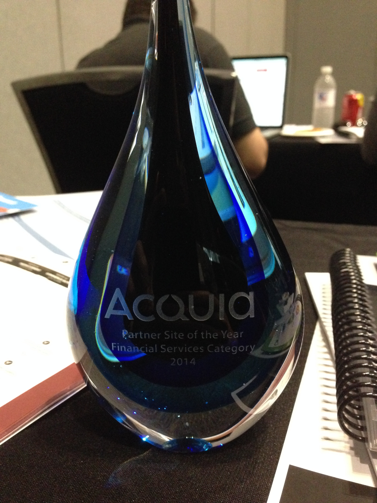

<!doctype html>
<html lang="en">

  <head>
    <meta charset="utf-8">

    <title>DrupalCon 2014</title>

    <meta name="description" content="DrupalCon 2014 overview">
    <meta name="author" content="Karl Kedrovsky">

    <meta name="apple-mobile-web-app-capable" content="yes" />
    <meta name="apple-mobile-web-app-status-bar-style" content="black-translucent" />

    <meta name="viewport" content="width=device-width, initial-scale=1.0, maximum-scale=1.0, user-scalable=no">

    <link rel="stylesheet" href="css/reveal.min.css">
    <link rel="stylesheet" href="css/theme/vml.css" id="theme">

    <!-- For syntax highlighting -->
    <link rel="stylesheet" href="lib/css/zenburn.css">

    <!-- If the query includes 'print-pdf', use the PDF print sheet -->
    <script>
      document.write( '<link rel="stylesheet" href="css/print/' + ( window.location.search.match( /print-pdf/gi ) ? 'pdf' : 'paper' ) + '.css" type="text/css" media="print">' );
    </script>

    <!--[if lt IE 9]>
    <script src="lib/js/html5shiv.js"></script>
    <![endif]-->
  </head>

  <body>

    <div class="reveal">

      <div class="slides">

        <section data-markdown>
          <script type="text/template">
            
          </script>
        </section>

        <section data-markdown>
          <script type="text/template">
            ## Overview
            - Key Sessions
            - Partnerships
            - Keynotes
          </script>
        </section>

        <section data-markdown>
          <script type="text/template">
            ## Key Sessions
            - Drupal 8 and Symfony
            - DevOps
            - Testing
          </script>
        </section>

        <section data-markdown>
          <script type="text/template">
            ## Drupal 8 and Symfony

            [Drupal 8 Entity API](https://austin2014.drupal.org/session/drupal-8-entity-api)

            [Twig: Friendly Curly Braces Invade Your Templates](https://austin2014.drupal.org/session/twig-friendly-curl-braces-invade-your-templates)

            [Drush 7](https://austin2014.drupal.org/session/config-commands-boris-shell-views-support-and-other-new-features-drush-7)

          </script>
        </section>

        <section data-markdown>
          <script type="text/template">
            ## DevOps

            [Devops Leads The Way To Better Drupal Development](https://austin2014.drupal.org/session/devops-leads-way-better-drupal-development)

            [Go Continuous Delivery: Mastering and Automating Complex Devops](https://austin2014.drupal.org/session/go-continuous-delivery-mastering-and-automating-complex-devops)

            [Devops For Humans: Ansible For Drupal Deployment Victory](https://austin2014.drupal.org/session/devops-humans-ansible-drupal-deployment-victory)
            
          </script>
        </section>

        <section data-markdown>
          <script type="text/template">
            ## Testing - BDD

            http://drupalwatchdog.com/2/2/behat-mink

            https://drupal.org/project/drupalextension

            https://www.drupal.org/project/behatrunner

          </script>
        </section>

        <section data-markdown>
          <script type="text/template">
            ## Parterships - Acquia

            
          </script>
        </section>

        <section data-markdown>
          <script type="text/template">
            ## Partnerships - Blink

            
          </script>
        </section>

        <section data-markdown>
          <script type="text/template">
            ## Keynotes

            The second day keynote is really the only one worth watching.

            [Erynn Petersen](https://austin2014.drupal.org/keynote-erynn-petersen)
          </script>
        </section>

        <section data-markdown>
          <script type="text/template">
            
          </script>
        </section>

      </div>

    </div>

    <script src="lib/js/head.min.js"></script>
    <script src="js/reveal.min.js"></script>

    <script>

      // Full list of configuration options available here:
      // https://github.com/hakimel/reveal.js#configuration
      Reveal.initialize({
        controls: true,
        progress: true,
        history: true,
        center: true,

        theme: Reveal.getQueryHash().theme, // available themes are in /css/theme
        transition: Reveal.getQueryHash().transition || 'default', // default/cube/page/concave/zoom/linear/fade/none

        // Optional libraries used to extend on reveal.js
        dependencies: [
          { src: 'lib/js/classList.js', condition: function() { return !document.body.classList; } },
          { src: 'plugin/markdown/marked.js', condition: function() { return !!document.querySelector( '[data-markdown]' ); } },
          { src: 'plugin/markdown/markdown.js', condition: function() { return !!document.querySelector( '[data-markdown]' ); } },
          { src: 'plugin/highlight/highlight.js', async: true, callback: function() { hljs.initHighlightingOnLoad(); } },
          { src: 'plugin/zoom-js/zoom.js', async: true, condition: function() { return !!document.body.classList; } },
          { src: 'plugin/notes/notes.js', async: true, condition: function() { return !!document.body.classList; } }
        ]
      });

    </script>

  </body>
</html>
